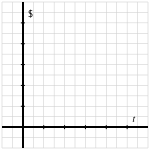
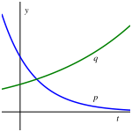
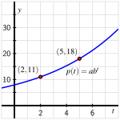
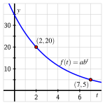

¿Qué significa decir que una función es “exponencial”?
¿Cuántos datos necesitamos saber para determinar la fórmula de una función exponencial?
¿Hay tendencias importantes que todas las funciones exponenciales exhiben?
Las funciones lineales tienen una tasa de cambio promedio constante y modelan muchos fenómenos importantes. En otros contextos, es natural que una cantidad cambie a una tasa que es proporcional a la cantidad presente. Por ejemplo, ya sea que pongas $\(100\) o $\(100000\) o cualquier otra cantidad en un fondo mutuo, el valor de la inversión cambia a una tasa proporcional a la cantidad presente. A menudo medimos esa tasa en términos de la tasa de porcentaje anual de retorno.
Supón que un cierto fondo mutuo tiene un retorno anual del \(10\)%. Si invertimos $\(100\text{,}\) después de \(1\) año todavía tenemos los $\(100\) originales, más ganamos el \(10\)% de $\(100\text{,}\) así que
Si en cambio invertimos $\(100000\text{,}\) después de \(1\) año nuevamente tenemos los $\(100000\) originales, pero ahora ganamos el \(10\)% de $\(100000\text{,}\) y así
Por lo tanto, vemos que independientemente de la cantidad de dinero originalmente invertida, digamos \(P\text{,}\) la cantidad de dinero que tenemos después de \(1\) año es \(1.1P\text{.}\)
Si repetimos nuestros cálculos para el segundo año, observamos que
y vemos que si invertimos \(P\) dólares, en \(2\) años nuestra inversión crecerá a \(1.1^2 P\text{.}\)
Por supuesto, en \(3\) años al \(10\)%, la inversión original \(P\) habrá crecido a \(1.1^3 P\text{.}\) Aquí vemos un nuevo tipo de patrón desarrollándose: el crecimiento anual del \(10\)% está llevando a potencias de la base \(1.1\text{,}\) donde la potencia a la que elevamos \(1.1\) corresponde al número de años que la inversión ha crecido. A menudo llamamos a este fenómeno crecimiento exponencial.
Preview Activity3.1.1.
Supón que a los \(20\) años tienes $\(20000\) y puedes elegir entre una de dos formas de usar el dinero: puedes invertirlo en un fondo mutuo que, en promedio, ganará un \(8\)% de interés anual, o puedes comprar un automóvil nuevo que, en promedio, se depreciará un \(12\)% anual. Vamos a explorar cómo cambian los $\(20000\) con el tiempo.
Sea \(I(t)\) el valor de los $\(20000\) después de \(t\) años si se invierte en el fondo mutuo, y sea \(V(t)\) el valor del automóvil \(t\) años después de ser comprado.
Determina \(I(0)\text{,}\)\(I(1)\text{,}\)\(I(2)\text{,}\) y \(I(3)\text{.}\)
Nota que si una cantidad se deprecia un \(12\)% anual, después de un año dado, queda el \(88\)% de la cantidad. Calcula \(V(0)\text{,}\)\(V(1)\text{,}\)\(V(2)\text{,}\) y \(V(3)\text{.}\)
Con base en los patrones en tus cálculos en (a) y (b), determina fórmulas para \(I(t)\) y \(V(t)\text{.}\)
Usa Desmos para definir \(I(t)\) y \(V(t)\text{.}\) Traza cada función en el intervalo \(0 \le t \le 20\) y registra tus resultados en los ejes en Figura 3.1.1, asegurándote de etiquetar la escala en los ejes. ¿Qué tendencias observas en los gráficos? ¿Cómo se comparan \(I(20)\) y \(V(20)\text{?}\)

Figure3.1.1.Ejes en blanco para trazar \(I\) y \(V\text{.}\)
Subsection3.1.1Funciones exponenciales de la forma \(f(t) = ab^t\)
En Preview Activity 3.1.1, encontramos las funciones \(I(t)\) y \(V(t)\) que tenían la misma estructura básica. Cada una puede escribirse en la forma \(g(t) = ab^t\) donde \(a\) y \(b\) son constantes positivas y \(b \ne 1\text{.}\) Basándonos en nuestro trabajo anterior con transformaciones, sabemos que la constante \(a\) es un factor de escala vertical, y por lo tanto, el comportamiento principal de la función proviene de \(b^t\text{,}\) a la que llamamos una “función exponencial”.
Definition3.1.2.
Sea \(b\) un número real tal que \(b \gt 0\) y \(b \ne 1\text{.}\) Llamamos a la función definida por
\begin{equation*}
f(t) = b^t
\end{equation*}
una función exponencial con base \(b\text{.}\)
Para una función exponencial \(f(t) = b^t\text{,}\) notamos que \(f(0) = b^0 = 1\text{,}\) por lo que una función exponencial de esta forma siempre pasa por \((0,1)\text{.}\) Además, debido a que un número positivo elevado a cualquier potencia siempre es positivo (por ejemplo, \(2^{10} = 1024\) y \(2^{-10} = \frac{1}{2^{10}} = \frac{1}{1024}\)), el resultado de una función exponencial también es siempre positivo. En particular, \(f(t) = b^t\) nunca es cero y por lo tanto no tiene intersecciones con el eje \(x\text{.}\)
Dado que frecuentemente nos interesarán funciones como \(I(t)\) y \(V(t)\) con la forma \(ab^t\text{,}\) también nos referiremos a funciones de esta forma como “exponenciales”, entendiendo que técnicamente estas son estiramientos verticales de funciones exponenciales según la Definición 3.1.2. En Preview Activity 3.1.1, encontramos que \(I(t) = 20000(1.08)^t\) y \(V(t) = 20000(0.88)^t\text{.}\) Es natural llamar a \(1.08\) el “factor de crecimiento” de \(I\) y de manera similar a \(0.88\) el factor de crecimiento de \(V\text{.}\) Además, notamos que estos valores provienen de las tasas de crecimiento reales: \(0.08\) para \(I\) y \(-0.12\) para \(V\text{,}\) siendo esta última negativa porque el valor está depreciándose. En general, para una función de la forma \(f(t) = ab^t\text{,}\) llamamos a \(b\) el factor de crecimiento. Además, si \(b = 1+r\text{,}\) llamamos a \(r\) la tasa de crecimiento. Siempre que \(b \gt 1\text{,}\) a menudo decimos que la función \(f\) está exhibiendo “crecimiento exponencial”, mientras que si \(0 \lt b \lt 1\text{,}\) decimos que \(f\) exhibe “decrecimiento exponencial”.
Exploramos las propiedades de las funciones de la forma \(f(t) = ab^t\) más a fondo en Activity 3.1.2.
Activity3.1.2.
En Desmos, define la función \(g(t) = ab^t\) y crea deslizadores para \(a\) y \(b\) cuando se te pida. Haz clic en los deslizadores para establecer el valor mínimo de cada uno en \(0.1\) y el valor máximo en \(10\text{.}\) Nota que para que \(g\) sea una función exponencial, requerimos que \(b \ne 1\text{,}\) aunque el deslizador para \(b\) permitirá este valor.
¿Cuál es el dominio de \(g(t) = ab^t\text{?}\)
¿Cuál es el rango de \(g(t) = ab^t\text{?}\)
¿Cuál es la intersección con el eje \(y\) de \(g(t) = ab^t\text{?}\)
¿Cómo afecta el cambio en el valor de \(b\) la forma y el comportamiento del gráfico de \(g(t) = ab^t\text{?}\) Escribe varias oraciones para explicar.
¿Para qué valores del factor de crecimiento \(b\) la tasa de crecimiento correspondiente es positiva? ¿Para qué valores de \(b\) la tasa de crecimiento es negativa?
Considera los gráficos de las funciones exponenciales \(p\) y \(q\) proporcionados en Figure 3.1.3. Si \(p(t) = ab^t\) y \(q(t) = cd^t\text{,}\) ¿qué puedes decir sobre los valores \(a\text{,}\)\(b\text{,}\)\(c\) y \(d\) (más allá del hecho de que todos son positivos y \(b \ne 1\) y \(d \ne 1\))? Por ejemplo, ¿puedes decir que un cierto valor es mayor que otro? ¿O que uno de los valores es menor que \(1\text{?}\)

Figure3.1.3.Gráficos de las funciones exponenciales \(p\) y \(q\text{.}\)
Subsection3.1.2Determinando fórmulas para funciones exponenciales
Para entender mejor los roles que \(a\) y \(b\) juegan en una función exponencial, comparemos funciones exponenciales y lineales. En Table 3.1.4 y Table 3.1.5, vemos la salida para dos funciones diferentes \(r\) y \(s\) que corresponden a entradas igualmente espaciadas.
\(t\)
\(0\)
\(3\)
\(6\)
\(9\)
\(r(t)\)
\(12\)
\(10\)
\(8\)
\(6\)
Table3.1.4.Datos para la función \(r\text{.}\)
\(t\)
\(0\)
\(3\)
\(6\)
\(9\)
\(s(t)\)
\(12\)
\(9\)
\(6.75\)
\(5.0625\)
Table3.1.5.Datos para la función \(s\text{.}\)
En Table 3.1.4, vemos una función que exhibe una tasa de cambio promedio constante ya que el cambio en la salida es siempre \(\triangle r = -2\) para cualquier cambio en la entrada de \(\triangle t = 3\text{.}\) Dicho de otra manera, \(r\) es una función lineal con pendiente \(m = -\frac{2}{3}\text{.}\) Dado que su intersección con el eje \(y\) es \((0,12)\text{,}\) la fórmula de la función es \(y = r(t) = 12 - \frac{2}{3}t\text{.}\)
En contraste, la función \(s\) dada por Table 3.1.5 no exhibe una tasa de cambio promedio constante. En su lugar, está presente otro patrón. Observa que si consideramos las razones de las salidas consecutivas en la tabla, vemos que
Así que, donde las diferencias en las salidas en Table 3.1.4 son constantes, las razones en las salidas en Table 3.1.5 son constantes. Esto último es una característica distintiva de las funciones exponenciales y puede usarse para ayudarnos a determinar la fórmula de una función para la cual tenemos cierta información.
Si sabemos que una cierta función es lineal, basta con conocer dos puntos que se encuentran en la línea para determinar la fórmula de la función. Resulta que las funciones exponenciales son similares: conocer dos puntos en el gráfico de una función que se sabe que es exponencial es suficiente información para determinar la fórmula de la función. En el siguiente ejemplo, mostramos cómo conocer dos valores de una función exponencial nos permite encontrar tanto \(a\) como \(b\) exactamente.
Example3.1.6.
Supón que \(p\) es una función exponencial y sabemos que \(p(2) = 11\) y \(p(5) = 18\text{.}\) Determina los valores exactos de \(a\) y \(b\) para los cuales \(p(t) = ab^t\text{.}\)
Solution.
Dado que sabemos que \(p(t) = ab^t\text{,}\) los dos puntos de datos nos dan dos ecuaciones en las incógnitas \(a\) y \(b\text{.}\) Primero, usando \(t = 2\text{,}\)
Porque sabemos que el cociente de las salidas de una función exponencial correspondiente a entradas igualmente espaciadas debe ser constante, consideramos naturalmente el cociente \(\frac{18}{11}\text{.}\) Usando Equation (3.1.1) y Equation (3.1.2), se sigue que
Simplificando la fracción a la derecha, vemos que \(\frac{18}{11} = b^3
\text{.}\) Resolviendo para \(b\text{,}\) encontramos que \(b = \sqrt[3]{\frac{18}{11}}\) es el valor exacto de \(b\text{.}\) Sustituyendo este valor de \(b\) en Equation (3.1.1), se sigue que \(a \left( \sqrt[3]{\frac{18}{11}} \right)^2 = 11\text{,}\) así que \(a = \frac{11}{\left( \frac{18}{11} \right)^{2/3}}
\text{.}\) Por lo tanto,
y un gráfico de \(y = p(t)\) confirma que la función efectivamente pasa por \((2,11)\) y \((5,18)\) como se muestra en Figure 3.1.7.

Figure3.1.7.Gráfico de \(p(t) = ab^t\) que pasa por \((2,11)\) y \((5,18)\text{.}\)
Activity3.1.3.
El valor de un automóvil está depreciándose. Cuando el coche tiene \(3\) años, su valor es $\(12500\text{;}\) cuando el coche tiene \(7\) años, su valor es $\(6500\text{.}\)
Supón que el valor del coche \(t\) años después de su compra está dado por la función \(V(t)\) y que \(V\) es exponencial con la forma \(V(t) = ab^t\text{,}\) ¿cuáles son los valores de \(a\) y \(b\text{?}\) Encuentra \(a\) y \(b\) tanto exactamente como aproximadamente.
Usando el modelo exponencial determinado en (a), determina el valor de compra del coche y luego usa Desmos para estimar cuándo el coche valdrá menos de $\(1000\text{.}\)
Supón en cambio que el valor del coche está modelado por una función lineal \(L\) y satisface los valores indicados al inicio de esta actividad. Encuentra una fórmula para \(L(t)\) y determina tanto el valor de compra del coche como cuándo valdrá $\(1000\text{.}\)
¿Cuál modelo crees que es más realista? ¿Por qué?
Subsection3.1.3Tendencias en el comportamiento de las funciones exponenciales
Recuerda que una función está aumentando en un intervalo si su valor siempre aumenta a medida que nos movemos de izquierda a derecha. De manera similar, una función está disminuyendo en un intervalo siempre que su valor siempre disminuya a medida que nos movemos de izquierda a derecha.
Si consideramos una función exponencial \(f\) con un factor de crecimiento \(b > 1\text{,}\) como la función mostrada en Figura 3.1.8, entonces la función siempre está aumentando porque las potencias más altas de \(b\) son mayores que las potencias menores (por ejemplo, \((1.2)^3 \gt (1.2)^2\)). Por otro lado, si \(0 \lt b \lt 1\text{,}\) entonces la función exponencial estará disminuyendo porque las potencias más altas de números positivos menores que \(1\) se hacen más pequeñas (por ejemplo, \((0.9)^3 \lt (0.9)^2\)), como se ve en la función exponencial en Figura 3.1.9.
Una tendencia adicional es evidente en los gráficos en Figura 3.1.8 y Figura 3.1.9. Cada gráfico se curva hacia arriba y, por lo tanto, es cóncavo hacia arriba. Podemos entender mejor por qué es así considerando la tasa de cambio promedio de \(f\) y \(g\) en intervalos consecutivos del mismo ancho. Elegimos intervalos adyacentes de longitud \(1\) y notamos particularmente que al calcular la tasa de cambio promedio de cada función en tales intervalos,
Por lo tanto, estas tasas de cambio promedio también están midiendo el cambio total en la función a lo largo de un intervalo de \(1\) unidad de ancho. Ahora asumimos que \(f(t) = 2 (1.25)^t\) y \(g(t) = 8(0.75)^t\) y calculamos la tasa de cambio de cada función en varios intervalos consecutivos.
\(t\)
\(f(t)\)
\(AV_{[t,t+1]}\)
\(0\)
\(2\)
\(0.5\)
\(1\)
\(2.5\)
\(0.625\)
\(2\)
\(3.125\)
\(0.78215\)
\(3\)
\(3.90625\)
\(0.97656\)
Table3.1.10.La tasa de cambio promedio de \(f(t) = 2(1.25)^t\text{.}\)
\(t\)
\(g(t)\)
\(AV_{[t,t+1]}\)
\(0\)
\(8\)
\(-2\)
\(1\)
\(6\)
\(-1.5\)
\(2\)
\(4.5\)
\(-1.125\)
\(3\)
\(3.375\)
\(-0.84375\)
Table3.1.11.La tasa de cambio promedio de \(g(t) = 8(0.75)^t\text{.}\)
De los datos en Tabla 3.1.10, vemos que la tasa de cambio promedio está aumentando a medida que aumentamos el valor de \(t\text{.}\) Naturalmente decimos que \(f\) parece estar “aumentando a una tasa creciente”. Para la función \(g\text{,}\) primero notamos que su tasa de cambio promedio es siempre negativa, pero también que la tasa de cambio promedio se vuelve menos negativa a medida que aumentamos el valor de \(t\text{.}\) Dicho de otra manera, la tasa de cambio promedio de \(g\) también está aumentando a medida que aumentamos el valor de \(t\text{.}\) Dado que \(g\) siempre está disminuyendo pero su tasa de cambio promedio está aumentando, decimos que \(g\) parece estar “disminuyendo a una tasa creciente”. Estas tendencias se mantienen para las funciones exponenciales en general 1
Se necesita cálculo para justificar esta afirmación de manera completa y rigurosa.
según las siguientes condiciones.
Tendencias en el comportamiento de las funciones exponenciales.
Para una función exponencial de la forma \(f(t) = ab^t\) donde \(a\) y \(b\) son ambos positivos con \(b \ne 1\text{,}\)
si \(b \gt 1\text{,}\) entonces \(f\) siempre está aumentando y siempre aumenta a una tasa creciente;
si \(0 \lt b \lt 1\text{,}\) entonces \(f\) siempre está disminuyendo y siempre disminuye a una tasa creciente.
Observa cómo la tasa de cambio promedio de una función nos ayuda a clasificar el comportamiento de la función en un intervalo: si la tasa de cambio promedio es siempre positiva o siempre negativa en el intervalo nos permite decir si la función siempre está aumentando o siempre está disminuyendo, y luego cómo cambia la tasa de cambio promedio en sí misma nos permite potencialmente decir cómo la función está aumentando o disminuyendo a través de frases como “disminuyendo a una tasa creciente”.
Activity3.1.4.
Para cada una de las siguientes indicaciones, da un ejemplo de una función que satisfaga las características indicadas proporcionando tanto una fórmula como un boceto de un gráfico.
Una función \(p\) que siempre está disminuyendo y disminuye a una tasa constante.
Una función \(q\) que siempre está aumentando y aumenta a una tasa creciente.
Una función \(r\) que siempre está aumentando para \(t \lt 2\text{,}\) siempre está disminuyendo para \(t \gt 2\text{,}\) y siempre está cambiando a una tasa decreciente.
Una función \(s\) que siempre está aumentando y aumenta a una tasa decreciente. (Pista: para encontrar una fórmula, piensa en cómo podrías usar una transformación de una función familiar.)
Una función \(u\) que siempre está disminuyendo y disminuye a una tasa decreciente.
Subsection3.1.4Resumen
Decimos que una función es exponencial siempre que su forma algebraica sea \(f(t) = ab^t\) para algunas constantes positivas \(a\) y \(b\) donde \(b \ne 1\text{.}\) (Técnicamente, la definición formal de una función exponencial es una de la forma \(f(t) = b^t\text{,}\) pero en nuestro uso cotidiano del término “exponencial” incluimos estiramientos verticales de estas funciones y, por lo tanto, permitimos que \(a\) sea cualquier constante positiva, no solo \(a = 1\)).
Para determinar la fórmula de una función exponencial de la forma \(f(t) = ab^t\text{,}\) necesitamos saber dos piezas de información. Típicamente, esta información se presenta de una de dos maneras.
Si sabemos la cantidad, \(a\text{,}\) de una cantidad en el tiempo \(t = 0\) y la tasa, \(r\text{,}\) a la que la cantidad crece o decae por unidad de tiempo, entonces se sigue que \(f(t) = a(1+r)^t\text{.}\) En este contexto, \(r\) a menudo se da como un porcentaje que convertimos a un decimal (por ejemplo, si la cantidad crece a una tasa de \(7\)% por año, establecemos \(r = 0.07\text{,}\) por lo que \(b = 1.07\)).
Si conocemos dos puntos en el gráfico de la función exponencial, entonces podemos establecer un sistema de dos ecuaciones con dos incógnitas y resolver tanto para \(a\) como para \(b\) exactamente. En esta situación, es útil considerar el cociente de las dos salidas conocidas, como se demuestra en Ejemplo 3.1.6.
Las funciones exponenciales de la forma \(f(t) = ab^t\) (donde \(a\) y \(b\) son ambos positivos y \(b \ne 1\)) exhiben las siguientes características importantes:
El dominio de cualquier función exponencial es el conjunto de todos los números reales y el rango de cualquier función exponencial es el conjunto de todos los números reales positivos.
La intersección con el eje \(y\) de la función exponencial \(f(t) = ab^t\) es \((0,a)\) y la función no tiene intersecciones con el eje \(x\text{.}\)
Si \(b \gt 1\text{,}\) entonces la función exponencial siempre está aumentando y siempre aumenta a una tasa creciente. Si \(0 \lt b \lt 1\text{,}\) entonces la función exponencial siempre está disminuyendo y siempre disminuye a una tasa creciente.
Exercises3.1.5Exercises
1.
Suppose \(Q = 30.8(0.751)^t\text{.}\) Give the starting value \(a\text{,}\) the growth factor\(b\text{,}\) and the growth rate\(r\) if \(Q = a \cdot b^t = a(1+r)^t\text{.}\)
\(a =\)
\(b =\)
\(r =\) %
2.
Find a formula for \(P = f(t)\text{,}\) the size of the population that begins in year \(t = 0\) with \(2090\) members and decreases at a \(3.7\) % annual rate. Assume that time is measured in years.
\(P = f(t) =\)
3.
(a) The annual inflation rate is \(3.8\)% per year. If a movie ticket costs $9.00 today, find a formula for \(p\text{,}\) the price of a movie ticket \(t\) years from today, assuming that movie tickets keep up with inflation.
\(P = f(t) =\)
(b) According to your formula, how much will a movie ticket cost in \(30\) years?
4.
In the year 2003, a total of 7.2 million passengers took a cruise vacation. The global cruise industry has been growing at 9% per year for the last decade. Assume that this growth rate continues.
(a) Write a formula for to approximate the number, \(N\text{,}\) of cruise passengers (in millions) \(t\) years after 2003.
\(N =\)
(b) How many cruise passengers (in millions) are predicted in the year 2011?
\(N =\)
(c) How many cruise passengers (in millions) were there in the year 2000?
\(N =\)
5.
The populations, \(P\text{,}\) of six towns with time \(t\) in years are given by
1
\(\displaystyle P = 800(0.78)^t\)
2
\(\displaystyle P = 900(1.06)^t\)
3
\(\displaystyle P = 1600(0.96)^t\)
4
\(\displaystyle P = 1400(1.187)^t\)
5
\(\displaystyle P = 500(1.14)^t\)
6
\(\displaystyle P = 2800(0.8)^t\)
Answer the following questions regarding the populations of the six towns above. Whenever you need to enter several towns in one answer, enter your answer as a comma separated list of numbers. For example if town 1, town 2, town 3, and town 4, are all growing you could enter 1, 2, 3, 4; or 2, 4, 1, 3; or any other order of these four numerals separated by commas.
(a) Which of the towns are growing?
(b) Which of the towns are shrinking?
(c) Which town is growing the fastest?
What is the annual percentage growth RATE of that town? %
(d) Which town is shrinking the fastest?
What is the annual percentage decay RATE of that town? %
(e) Which town has the largest initial population?
(f) Which town has the smallest initial population?
6.
(a) Determine whether function whose values are given in the table below could be linear or exponential.
linear
exponential
\(x =\)
0
1
2
3
4
\(h(x) =\)
14
8
2
-4
-10
Find a possible formula for this function.
\(h(x) =\)
(b) Determine whether function whose values are given in the table below could be linear or exponential.
linear
exponential
\(x =\)
0
1
2
3
4
\(i(x) =\)
14
12.6
11.34
10.206
9.1854
Find a possible formula for this function.
\(i(x) =\)
7.
A population has size 8000 at time \(t = 0\text{,}\) with \(t\) in years.
(a) If the population decreases by 125 people per year, find a formula for the population, \(P\text{,}\) at time \(t\text{.}\)
\(P(t) =\)
(b) If the population decreases by 6% per year, find a formula for the population, \(P\text{,}\) at time \(t\text{.}\)
\(P(t) =\)
8.
Grinnell Glacier in Glacier National Park in Montana covered about \(142\) acres in 2007 and was found to be shrinking at about \(4.4\)% per year. 2
See Exercise 34 on p. 146 of Connally’s Functions Modeling Change.
Let \(G(t)\) denote the area of Grinnell Glacier in acres in year \(t\text{,}\) where \(t\) is the number of years since 2007. Find a formula for \(G(t)\) and define the function in Desmos.
How many acres of ice were in the glacier in 1997? In 2012? What does the model predict for 2022?
How many total acres of ice were lost from 2007 to 2012?
What was the average rate of change of \(G\) from 2007 to 2012? Write a sentence to explain the meaning of this number and include units on your answer. In addition, how does this compare to the average rate of change of \(G\) from 2012 to 2017?
How would you you describe the overall behavior of \(G\text{,}\) and thus what is happening to the Grinnell Glacier?
9.
Consider the exponential function \(f\) whose graph is given by Figure 3.1.12. Note that \(f\) passes through the two noted points exactly.

Figure3.1.12.A plot of the exponential function \(f\text{.}\)
Determine the values of \(a\) and \(b\) exactly.
Determine the average rate of change of \(f\) on the intervals \([2,7]\) and \([7,12]\text{.}\) Which average rate is greater?
Find the equation of the linear function \(L\) that passes through the points \((2,20)\) and \((7,5)\text{.}\)
Which average rate of change is greater? The average rate of change of \(f\) on \([0,2]\) or the average rate of change of \(L\) on \([0,2]\text{?}\)
10.
A cup of hot coffee is brought outside on a cold winter morning in Winnipeg, Manitoba, where the surrounding temperature is \(0\) degrees Fahrenheit. A temperature probe records the coffee’s temperature (in degrees Fahrenheit) every minute and generates the data shown in Table 3.1.13.
Table3.1.13.The temperature, \(F\text{,}\) of the coffee at time \(t\text{.}\)
\(t\)
\(0\)
\(2\)
\(4\)
\(6\)
\(8\)
\(10\)
\(F(t)\)
\(175\)
\(129.64\)
\(96.04\)
\(71.15\)
\(52.71\)
\(39.05\)
Assume that the data in the table represents the overall trend of the behavior of \(F\text{.}\) Is \(F\) linear, exponential, or neither? Why?
Is it possible to determine an exact formula for \(F\text{?}\) If yes, do so and justify your formula; if not, explain why not.
What is the average rate of change of \(F\) on \([4,6]\text{?}\) Write a sentence that explains the practical meaning of this value in the context of the overall exercise.
How do you think the data would appear if instead of being in a regular coffee cup, the coffee was contained in an insulated mug?
11.
The amount (in milligrams) of a drug in a person’s body following one dose is given by an exponential decay function. Let \(A(t)\) denote the amount of drug in the body at time \(t\) in hours after the dose was taken. In addition, suppose you know that \(A(3) = 22.7\) and \(A(6) = 15.2\text{.}\)
Find a formula for \(A\) in the form \(A(t) = ab^t\text{,}\) where you determine the values of \(a\) and \(b\) exactly.
What is the size of the initial dose the person was given?
How much of the drug remains in the person’s body \(8\) hours after the dose was taken?
Estimate how long it will take until there is less than \(1\) mg of the drug remaining in the body.
Compute the average rate of change of \(A\) on the intervals \([3,5]\text{,}\)\([5,7]\text{,}\) and \([7,9]\text{.}\) Write at least one careful sentence to explain the meaning of the values you found, including appropriate units. Then write at least one additional sentence to explain any overall trend(s) you observe in the average rate of change.
Plot \(A(t)\) on an appropriate interval and label important points and features of the graph to highlight graphical interpretations of your answers in (b), (c), (d), and (e).